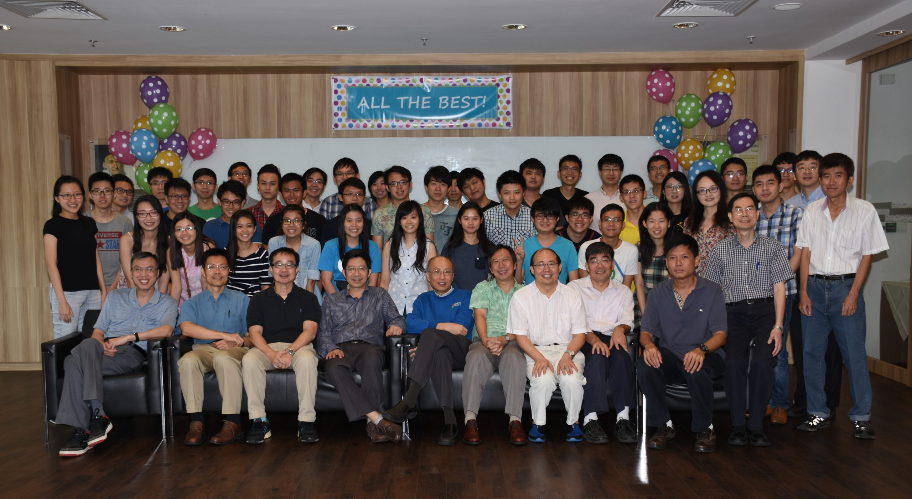

About Us
At the Faculty of Mathematics at NUS, we are committed to fostering a deep understanding and appreciation of mathematics in its diverse forms. Our faculty combines rigorous academic training with innovative research, creating an environment where students can explore complex concepts and engage in critical thinking. With a diverse range of courses and a strong emphasis on interdisciplinary collaboration, we prepare our students to tackle real-world problems and contribute to advancements in various fields. Our distinguished faculty members are not only dedicated educators but also leading researchers, providing mentorship and guidance. Join us at NUS Mathematics, where we inspire curiosity, nurture talent, and shape the mathematicians of tomorrow.
Programmes

Mathemathic Research |

Computational mathematics |
Quantitative Finance |
Data Science |
Join us
We are excited to invite you to apply to the Faculty of Mathematics at NUS, where you can embark on a transformative journey into the world of mathematical exploration and discovery. Our programs offer a rich blend of theoretical foundations and practical applications, designed to cultivate critical thinking and problem-solving skills. As part of our diverse community, you will engage with distinguished faculty, collaborate with fellow students, and participate in cutting-edge research that addresses real-world challenges. Join us at NUS Mathematics and unlock your potential in a field that shapes the future—apply now to be part of our inspiring academic environment!